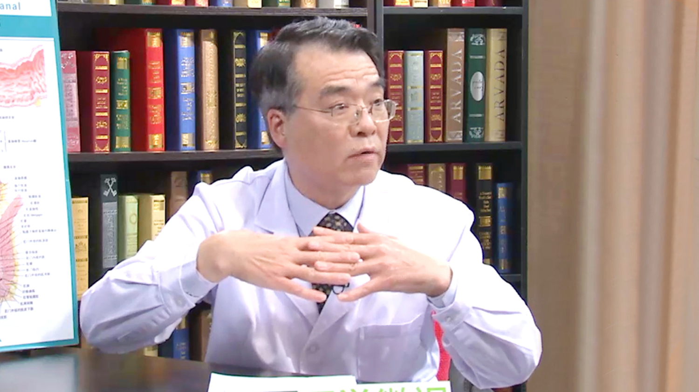

20.13 痔疮¶
寇玉明 主任医师¶

中国中医科学院广安门医院肛肠科副主任 主任医师。
北京圣马克医院主任医师；中华中医药学会肛肠专业委员会常务理事；全国中医药高等教育学会临床教育研究会肛肠分会常务理事；北京中医药学会肛肠专业委员会常务理事；中国肛肠网常务理事；《中国中西医结合肛肠病杂志》编委；《北京肛肠通讯》编委；《武警医学》编委。
主要成就： 作为消痔灵研制小组的主要成员之一，协助史兆岐主任研制消痔灵注射液，获得“世界发明博览会金奖”；主研课题多项，并于国内外获取多个奖项；发表专业论文30余篇、出版专著2部。
专业特长： 从事临床工作近40年，先后师从于周济民、史兆岐、曹吉勋等著名肛肠前辈。总结临床经验，博采众家之长，形成了一整套个人的治疗理念和手术风格，具有很强的解决本专业的疑难复杂疾病的能力。 “